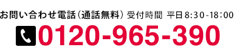
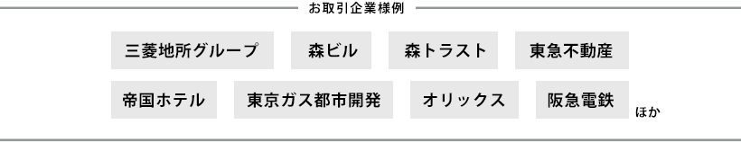
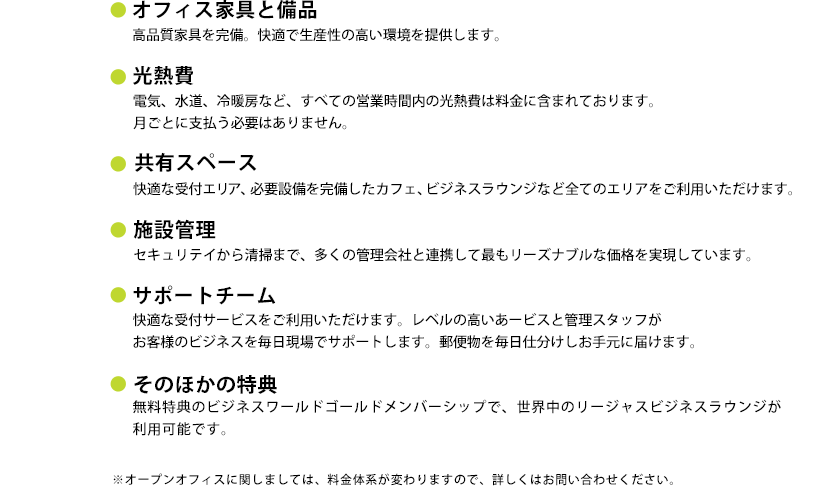
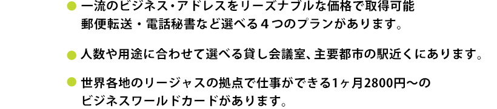
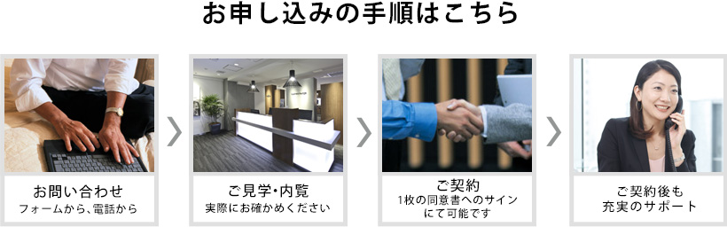
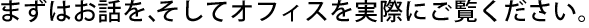

オープンオフィスブランドは、ビジネスのスタートに必要な環境を無駄なく完備しています。 有利な場所にありながらも、必要最小限の規模、経済的な料金でオフィスを提供いたします。 リージャスブランドと併せてオフィスの選択肢が広がります。


札幌
青森
仙台
東京
千葉
横浜
水戸
静岡
名古屋
岡山
大阪
京都
神戸
広島
香川
福岡
熊本
北九州
鹿児島
沖縄

![・開設コストを大幅に削減します。
従来の賃貸契約で発生する、敷金・礼金が必要ありません。また事務機器設置などの設備投資も不要です。必要なのは保証金2ヶ月のみです。（ご退去後、保証金は全額返還されます。）
・オフィス家具や環境を完備 即入居が可能です。
オフィス家具、電話、ITネットワーク、ファックス、受付、家具を完備しています。各種家具や機器をリースまたは購買する必要がありません。オフィス開設に伴う時間と手間も省くことが可能です。
・ビジネスの成長に合わせてオフィス環境を柔軟に変化できます。
従来の賃貸契約では、長期の賃貸契約に拘束されますが、お客様のニーズに合わせて、スペースの拡大や縮小が可能です。利用期間も1ヶ月から、プランも1人部屋から、100名様用、共有オフィスまで豊富なプランから選べます
・高品質なサービスを提供します。
日英バイリンガルのスタッフが受付や事務をサポートします。電話対応や郵便物の配布などから、翻訳サービス、IT関連のサポートまで、プロフェッショナルな事務スタッフがお客様のビジネスをサポートします
・ハイグレードビルの住所で貴社ビジネスのイメージアップを
リージャスのレンタルオフィスは主要な駅の側のハイグレードなビルの中にあります。有名なビジネスアドレスを持つことにより、イメージアップを図ることが可能です。ビジネスの差別化を可能します。](../common/rentaloffice_01/images/c_02.gif)